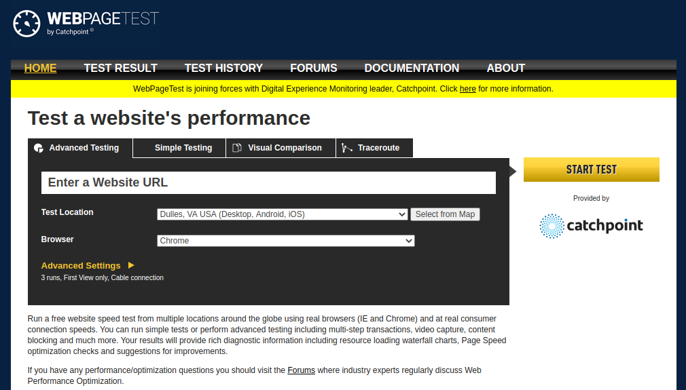
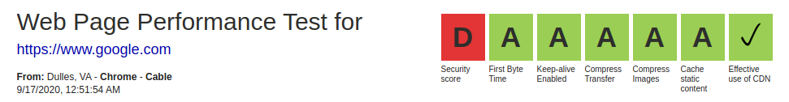

Security,
Content Security Policy,
Background Images,
And Mobile performance,
Use arrow keys to move slides
John Brandenburg
Technology Manager
Web Page Test
Security scores of recent sites
Don't feel too bad
 mail.google.com Gets an A+ though.Judge your security posture by the needs of your site.
PII?
Finance?
Low grades are due to:
- Strict Transport Security - HSTS
- Content Security Policy - CSP
It also may call out a low an XSS issue, and X Frame options, but those two are the "high severity" items
What is HSTS?
A header that is sent in the page request that tellsthe browser to connect to that domain via HTTPS
strict-transport-security: max-age=31536000; includeSubDomainshttp headers
How can I set up HSTS?
In Drupal, the Security Kit module can be used. You can also just set the header directly in PHP.
In Wordpress. Also set the header directly. There are also Plugins available.
Warning
If a site was setup to use HSTS, and you ever let the certificate expire, no one will be able to access the site.
What is CSP?
A protocol that allows you to define the acceptable sources a website can use to access resources
Yeah, but what does that mean?
An HTTP header that...
Defines what sources can be used on a web page.
content-security-policy: default-src 'self';From here, you can add domains, nonces, hashes, protocols, and other options.
Why do I need a Content Security Policy?
British airways hack in 2018
- 380,000 credit card details.
- Facing £183m fine (GDPR).
These days, hacking is automated, someone may just want to install a bitcoin miner.
No site is too small to hack.
CSP Categories:
- default-src
- child-src
- connect-src
- font-src
- frame-src
- img-src
- manifest-src
- media-src
- object-src
- prefetch-src
- script-src
- script-src-attr
- script-src-elem
- style-src
- style-src-attr
- style-src-elem
- worker-src
- base-uri
- form-action
- frame-ancestors
- navigate-to
Rules Apply from Specific to General
Browsers will apply rules that go from the most specific to most general. So if rules are missing for the more specific rules, they will apply the more general ones.
Also note not all browsers implement all categories. E.g. Firefox does not use script-src-attr.
So you should always enable the default-src
Which is not enabled by default in th csp Drupal module.
Report-only mode
Allows you to see what would be blocked, without blocking it.
Key features in CSP
unsafe-inline
Content-Security-Policy: default-src 'unsafe-inline'Still better than not using a CSP at all.
Hashes
Content-Security-Policy: script-src 'sha256-B2yPHKaXnvFWtRChIbabYmUBFZdVfKKXHbWtWidDVF8='
Script or style allow-listed by referencing a base64/sha256/sha384/sha512 hashed version of the code.
Using hashes can be problematic, as they will invalidate any "unsafe-inline" options.
Don't use hashes
Nonces
<style nonce="ABC123">Script or style allow-listed by referencing an arbitrary, server-defined string. These should be generated new for each request.
https://developer.mozilla.org/en-US/docs/Web/HTTP/Headers/Content-Security-Policy/script-srcDon't use static nonces.
They defeat the purpose of a CSP.
![content-security-policy: default-src 'self'; font-src 'self' d2rluhlsrx2f7f.cloudfront.net dujgk33i56scb.cloudfront.net fonts.gstatic.com; frame-src 'self' www.google.com; img-src 'self' d2rluhlsrx2f7f.cloudfront.net dujgk33i56scb.cloudfront.net scontent-iad3-1.cdninstagram.com static.addtoany.com www.google-analytics.com scontent-lga3-2.cdninstagram.com data:; script-src 'self' 'unsafe-inline' www.googletagmanager.com www.google.com www.gstatic.com www.google-analytics.com js-agent.newrelic.com bam.nr-data.net d2rluhlsrx2f7f.cloudfront.net dujgk33i56scb.cloudfront.net https://cdn.jsdelivr.net https://cdnjs.cloudflare.com https://static.addtoany.com; style-src 'self' 'unsafe-inline' static.addtoany.com d2rluhlsrx2f7f.cloudfront.net dujgk33i56scb.cloudfront.net fonts.googleapis.com https://cdn.jsdelivr.net https://cdnjs.cloudflare.com; frame-ancestors 'self'; report-uri http://rti-sra.forumone.dev/report-uri/enforce](images/csp-long.png)
I forgot to set "default-src"
Demonstration
- No CSP
- Report Only CSP
- Enforced CSP
- Hash
- Nonce
- unsafe-inline
What are the current limitations of CSP?
Safari 13 does not support some parts of the CSP3 spec (Just hashes?). Most other browsers support CSP3. Safari 14 should, (released last week).
Inconsistent browser support of categories.
A weak CSP can still let attacks through.
How do you set a CSP?
You could just set it manually in PHP,
but CSP often needs to be dynamic.
Wordpress
Various plugins available. Not sure what is the best yet.
Drupal
Do not use the "Security Kit."
(Bug in Drupal breaks CKEditor)
CSP module is smart enough to automatically add unsafe-inline to any pages with CKEditor on them.
Does not work well with ajax loaded editors (e.g. when editing Paragraphs).
<div style="background-image: url('...')">
CSP will block this without the "unsafe-inline" option.
The rest of this presentation is how to mitigate this.
We need to dynamically adhere to our CSP
Modules
- Content Security Policy (drupal/csp)
- Background Images Formatter (drupal/bg_image_formatter)
- (not background_image_formatter)
- The currently unreleased 3.x branch, which is available on the drupal.org repository
- Attach Inline
- Bug in version 1.3. Next release should be fixed
- Add this to settings.php to use nonces:
$config['attachinline.settings']['csp-allow-method'] = 'nonce';While we are at it, why don't we improve mobile performance?
Responsive Images (Drupal Core module)
Responsive Background Images Formatter (submodule to Background Images formatter) .
What next?
Get 3.0 release done for Background Images Formatter. - (Better Media Handling)
Merge KJ's PR.
Improve Attach Inline Module.
Questions and Discussion
How many "ums"?